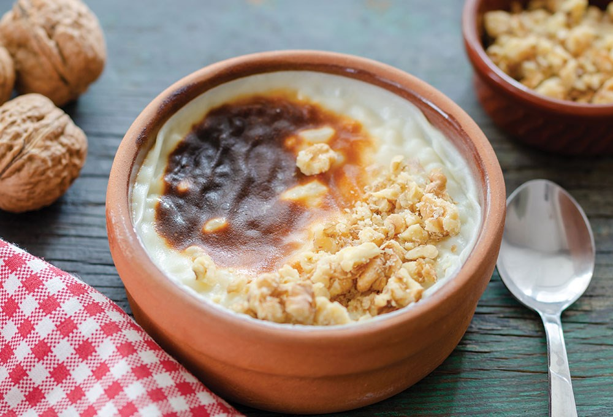

| Fiyat listesi |
|---|
| BÜYÜK PORSİYON :50tl |
| ORTA PORSİYON:35tl |
| KÜÇÜK PORSİYON:20tl |
Sütlaç, çeşitli mutfak kültürlerinde bulunabilen bir tatlı. Türk mutfağında yer alan birçok sütlü tatlı içinde en yaygın yapılanlarından ve tanınanlarından biri de sütlaçtır. Başlıca malzemeleri pirinç, süt ve şekerdir. Kıvamı kişilerin zevkine göre değişse de genelde kabul gören ve beğenilen kıvam pirinç tanelerinin çok sert olmamak kaydıyla tek tek ağza gelebilecek şekilde olmasıdır. Batı ve Kuzey Avrupa ülkelerinin mutfağında bulunan sütlaç özellikle İskandinavya ülkelerinde tarçın sosu veya kavrulmuş badem şekerleme kronatları ile garnitür edilerek sadece yılbaşında servis edilmektedir.
